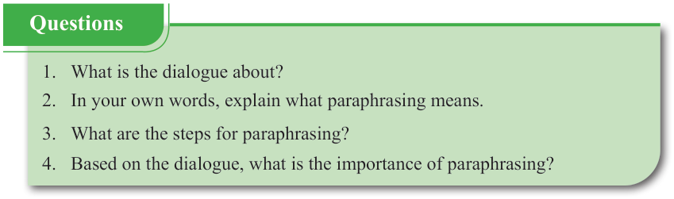
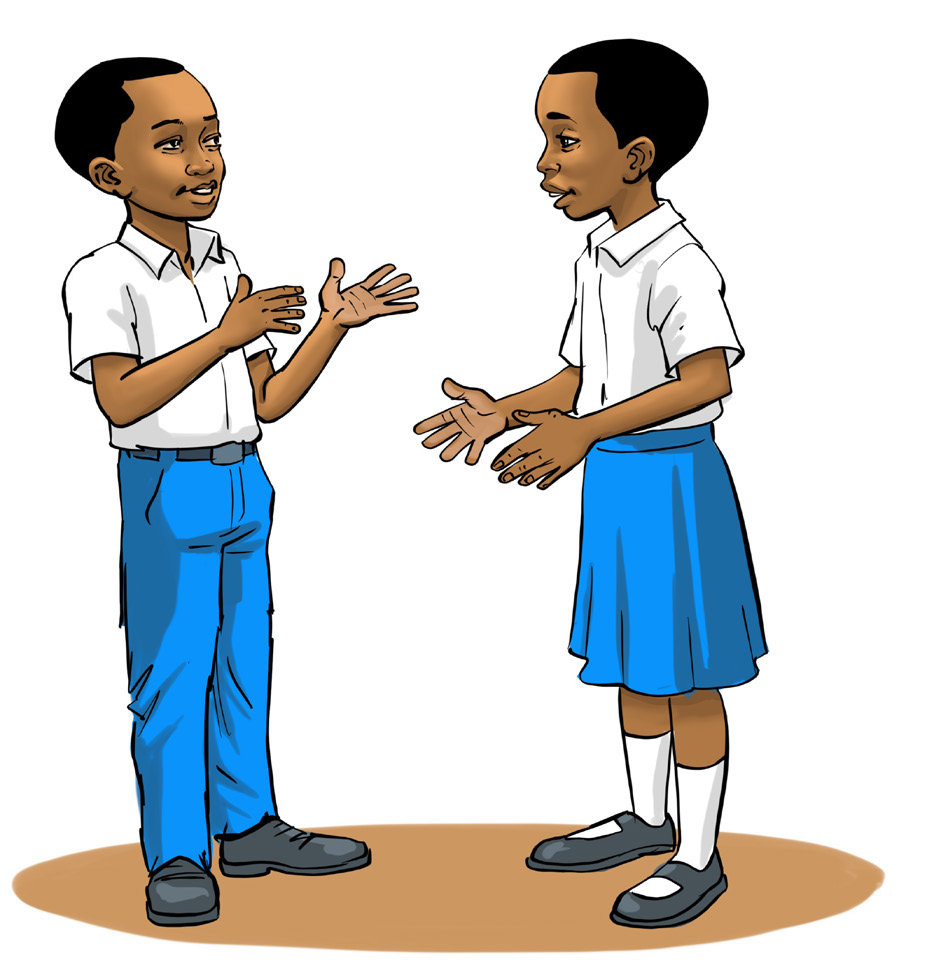

English for Secondary Schools Student’s Book Form One, printed page 105

Question box with four comprehension questions about a dialogue on paraphrasing: what the dialogue is about, the meaning of paraphrasing, the steps for paraphrasing, and the importance of paraphrasing.Questions
- 1. What is the dialogue about?
- 2. In your own words, explain what paraphrasing means.
- 3. What are the steps for paraphrasing?
- 4. Based on the dialogue, what is the importance of paraphrasing?
Paraphrasing a conversation
(a) Study the following conversation. Then, answer the questions that follow.
During my last holidays, I visited my grandparents in the village. It was a nice trip! I helped them to fetch water, collect firewood and take out the goats for grazing.
You have said that you spent your previous holiday in the village, you went to see your grandparents. It was a pleasant journey. You assisted them in fetching water, gathering firewood, and looking after goats.

Two students in school uniform facing each other and talking with hand gestures during a conversation.